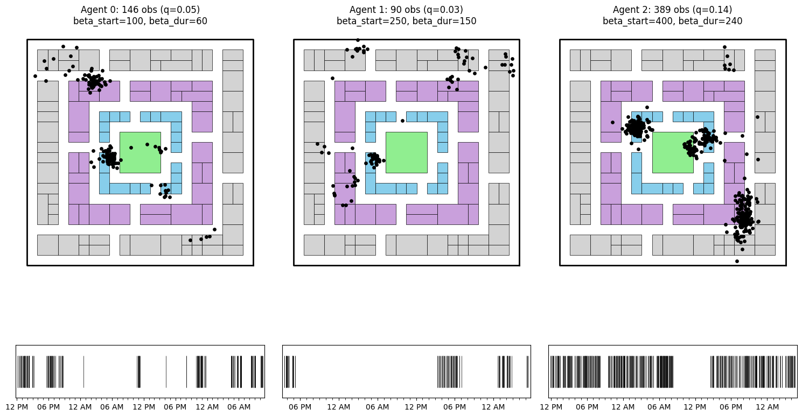

Synthetic Trajectory Generation with Nomad
This notebook demonstrates how to generate realistic synthetic human mobility trajectories.
[1]:
import pandas as pd
import numpy as np
import matplotlib.pyplot as plt
import time
from pathlib import Path
from joblib import Parallel, delayed
from nomad.city_gen import City
from nomad.traj_gen import Agent, Population
from nomad.stop_detection.viz import plot_pings, plot_time_barcode
[3]:
city = City.from_geopackage('garden-city.gpkg')
city._build_hub_network(hub_size=16)
city.compute_gravity(exponent=2.0)
city.compute_shortest_paths(callable_only=True)
print(f"City: {city.name}")
print(f"Dimensions: {city.dimensions}")
print(f"Buildings: {len(city.buildings_gdf)}")
City: Garden City
Dimensions: (22, 22)
Buildings: 106
Part 1: Effect of Sampling Parameters on Sparsity
Generate 3 agents with 2-day trajectories, varying beta_duration and beta_start to show their effect on sparsity (q = observed points / ground truth points).
[4]:
population = Population(city)
population.generate_agents(N=3, seed=42, name_count=2)
# Vary beta_duration and beta_start to target different sparsity levels
sampling_params = [
{'beta_ping': 5, 'beta_start': 100, 'beta_durations': 60},
{'beta_ping': 5, 'beta_start': 250, 'beta_durations': 150},
{'beta_ping': 5, 'beta_start': 400, 'beta_durations': 240}
]
# Generate 2-day trajectories for quick visualization
for i, (agent_id, agent) in enumerate(population.roster.items()):
agent.generate_trajectory(
datetime=pd.Timestamp("2024-01-01T07:00-04:00"),
end_time=pd.Timestamp("2024-01-03T07:00-04:00"),
seed=i
)
agent.sample_trajectory(
**sampling_params[i],
replace_sparse_traj=True,
seed=i
)
q = len(agent.sparse_traj) / len(agent.trajectory)
print(f"Agent {i}: q={q:.3f}, beta_start={sampling_params[i]['beta_start']}, "
f"beta_dur={sampling_params[i]['beta_durations']}")
Agent 0: q=0.051, beta_start=100, beta_dur=60
Agent 1: q=0.031, beta_start=250, beta_dur=150
Agent 2: q=0.135, beta_start=400, beta_dur=240
[5]:
fig, axes = plt.subplots(2, 3, figsize=(15, 10),
gridspec_kw={'height_ratios': [10, 1]})
for i, (agent_id, agent) in enumerate(population.roster.items()):
ax_map = axes[0, i]
ax_barcode = axes[1, i]
city.plot_city(ax=ax_map, doors=False, address=False)
traj = agent.sparse_traj
plot_pings(traj, ax=ax_map, s=15, point_color='red',
x='x', y='y', timestamp='timestamp')
plot_time_barcode(traj['timestamp'], ax=ax_barcode, set_xlim=True)
q = len(traj) / len(agent.trajectory)
ax_map.set_title(f"Agent {i}: {len(traj)} obs (q={q:.2f})\n"
f"beta_start={sampling_params[i]['beta_start']}, "
f"beta_dur={sampling_params[i]['beta_durations']}")
ax_map.set_axis_off()
plt.tight_layout()
plt.savefig('data/trajectories_visualization.png', dpi=150, bbox_inches='tight')
plt.show()

Part 2: Parallel Generation at Scale
Generate trajectories for 15 users using parallelization.
[6]:
def generate_agent_trajectory(args):
"""Worker function for parallel generation."""
identifier, home, work, seed = args
city = City.from_geopackage('garden-city.gpkg')
city._build_hub_network(hub_size=16)
city.compute_gravity(exponent=2.0)
city.compute_shortest_paths(callable_only=True)
agent = Agent(identifier=identifier, city=city, home=home, workplace=work)
agent.generate_trajectory(
datetime=pd.Timestamp("2024-01-01T07:00-04:00"),
end_time=pd.Timestamp("2024-01-08T07:00-04:00"),
seed=seed
)
agent.sample_trajectory(
beta_ping=5,
replace_sparse_traj=True,
seed=seed
)
sparse_df = agent.sparse_traj.copy()
sparse_df['user_id'] = identifier
sparse_df['home'] = home
sparse_df['workplace'] = work
return sparse_df
[7]:
n_agents = 15
rng = np.random.default_rng(100)
homes = city.buildings_gdf[city.buildings_gdf['building_type'] == 'home']['id'].to_numpy()
workplaces = city.buildings_gdf[city.buildings_gdf['building_type'] == 'workplace']['id'].to_numpy()
agent_params = [
(f'agent_{i:04d}',
rng.choice(homes),
rng.choice(workplaces),
i)
for i in range(n_agents)
]
[8]:
print(f"Generating {n_agents} agents in parallel...")
start_time = time.time()
results = Parallel(n_jobs=-1, verbose=10)(
delayed(generate_agent_trajectory)(params) for params in agent_params
)
generation_time = time.time() - start_time
print(f"Generated {n_agents} agents in {generation_time:.2f}s ({generation_time/n_agents:.2f}s per agent)")
Generating 15 agents in parallel...
[Parallel(n_jobs=-1)]: Using backend LokyBackend with 8 concurrent workers.
[Parallel(n_jobs=-1)]: Done 2 out of 15 | elapsed: 18.3s remaining: 2.0min
[Parallel(n_jobs=-1)]: Done 4 out of 15 | elapsed: 23.3s remaining: 1.1min
[Parallel(n_jobs=-1)]: Done 6 out of 15 | elapsed: 24.6s remaining: 36.9s
[Parallel(n_jobs=-1)]: Done 8 out of 15 | elapsed: 24.9s remaining: 21.8s
[Parallel(n_jobs=-1)]: Done 10 out of 15 | elapsed: 27.0s remaining: 13.5s
[Parallel(n_jobs=-1)]: Done 12 out of 15 | elapsed: 29.2s remaining: 7.2s
Generated 15 agents in 30.52s (2.03s per agent)
[Parallel(n_jobs=-1)]: Done 15 out of 15 | elapsed: 30.4s finished
[10]:
parallel_population = Population(city)
for df, params in zip(results, agent_params):
identifier, home, work, seed = params
agent = Agent(identifier=identifier, city=city, home=home, workplace=work, seed=seed)
agent.sparse_traj = df.drop(columns=['home', 'workplace'])
parallel_population.add_agent(agent, verbose=False)
output_path = 'data/trajectories_15_users'
parallel_population.save_pop(
sparse_path=str(output_path),
fmt='parquet'
)
print(f"Saved sparse trajectories to {output_path}")
Saved sparse trajectories to data/trajectories_15_users
[ ]: